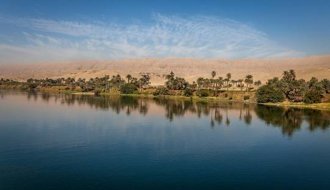
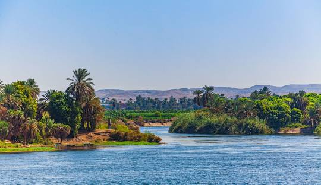
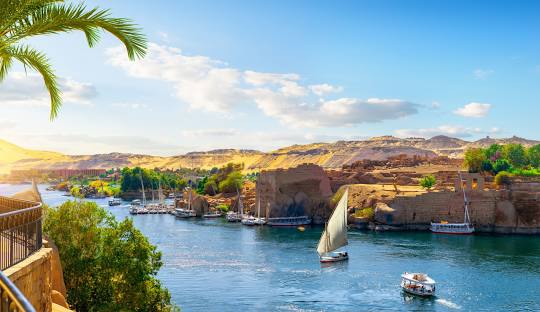

The Nile River, often hailed as the lifeblood of Egypt, is one of the longest rivers in the world, stretching approximately 6,650 kilometers (4,130 miles) through northeastern Africa. It flows northward through eleven countries, including Uganda, Sudan, and Egypt, before emptying into the Mediterranean Sea. This majestic river has played a crucial role in shaping the cultural, economic, and political landscapes of the regions it traverses, serving as a foundation for the development of ancient civilizations and continuing to influence modern societies.
Historical Significance
Historically, the Nile was central to the development of ancient Egyptian civilization. Its annual flooding deposited nutrient-rich silt onto the surrounding land, creating fertile grounds that enabled agriculture to flourish in an otherwise arid environment. The Egyptians relied heavily on the river for irrigation, allowing them to cultivate crops such as wheat, barley, and flax. This agricultural bounty supported a growing population and led to the rise of one of the world's earliest and most influential civilizations.
The annual flooding of the Nile was so predictable that it became the cornerstone of the Egyptian calendar. This phenomenon allowed for the planning of agricultural activities, ensuring that farmers could maximize their yields. The concept of Ma'at, representing harmony and balance, was closely linked to the Nile's predictable cycles. The river's role in the agricultural calendar fostered a deep spiritual connection to the land, and many deities in the Egyptian pantheon were associated with the Nile.
The Nile also served as a vital transportation route, facilitating trade and communication between various regions. Boats navigating its waters allowed for the exchange of goods, ideas, and culture, contributing to the interconnectedness of ancient Egyptian society. Major cities such as Thebes and Memphis developed along its banks, serving as centers of administration and culture. The river was not merely a resource; it was a cultural and spiritual symbol, depicted in art, literature, and religious practices.

Ecological Importance
Beyond its historical significance, the Nile River is vital to the ecosystem of northeastern Africa. The river supports a diverse range of wildlife, including fish, birds, and aquatic plants. Species such as the Nile crocodile and various types of fish, including tilapia, thrive in its waters, providing sustenance for local communities. The wetlands surrounding the Nile serve as critical habitats for many species, some of which are endemic to the region. Moreover, the river plays a crucial role in the migratory patterns of birds, making it an essential ecological corridor.
The Nile's unique ecosystem also includes the Nile Delta, a rich area where the river meets the Mediterranean Sea. This delta is one of the most fertile regions in Egypt and has been a significant agricultural zone for centuries. The interplay between the river and its surrounding environment supports not only biodiversity but also economic activities such as fishing and farming.
However, the river’s delicate ecosystem faces significant threats. Over the years, pollution from industrial runoff, agricultural chemicals, and untreated sewage has compromised the health of the Nile. Overfishing has led to declines in fish populations, disrupting local economies that depend on this resource. The effects of climate change, including altered rainfall patterns and rising temperatures, further exacerbate these challenges, impacting both the river's flow and the communities that rely on it.
Modern Challenges and Management

In contemporary times, the Nile continues to be a source of contention among the countries it flows through. With increasing populations and rising water demands, tensions have escalated regarding water rights and management. The construction of the Grand Ethiopian Renaissance Dam (GERD) has heightened these tensions, particularly between Ethiopia, Sudan, and Egypt. Each country has its own interests and concerns, making cooperative management of the river an ongoing challenge.
Egypt, which relies heavily on the Nile for its freshwater supply, views the GERD as a potential threat to its water security. Conversely, Ethiopia sees the dam as crucial for its development and energy needs. Sudan is caught in the middle, balancing its interests in both countries. Diplomatic efforts have been made to establish treaties and agreements aimed at equitable water distribution, yet the complexities of political relations, economic needs, and environmental sustainability complicate these discussions.
The Nile Basin Initiative, established in 1999, aims to foster cooperation among the riparian states. This collaborative approach seeks to address shared water management issues, promote sustainable development, and enhance regional stability. However, achieving a balance between competing interests remains a formidable task, as the historical context of colonial-era treaties further complicates negotiations over water rights.
Cultural Legacy
The cultural legacy of the Nile extends beyond its historical and ecological significance. The river has been immortalized in countless works of art, literature, and music. Ancient Egyptian art frequently depicted scenes of the Nile, illustrating its importance in daily life and religious practices. The river also plays a central role in the mythology of ancient Egypt, where it was often personified as a god, representing fertility and life.
In modern times, the Nile continues to inspire artists, writers, and musicians. Its vastness and beauty serve as a backdrop for storytelling and creativity, while also representing the struggles and triumphs of the people who depend on its waters. Festivals celebrating the Nile’s significance are held in various communities along its banks, reinforcing cultural identities and traditions that have persisted for millennia.
Conclusion

The Nile River remains an emblem of life and civilization in northeastern Africa. Its historical and cultural significance is immeasurable, having nurtured one of the world's oldest societies and continuing to sustain millions today. As modern challenges arise, the importance of cooperative management and sustainable practices becomes increasingly vital. Protecting the Nile is not just about preserving a river; it is about safeguarding the livelihoods, cultures, and ecosystems that rely on its waters.
The future of the Nile hinges on our ability to adapt and collaborate, ensuring that this iconic river continues to flow as a source of life and inspiration for generations to come. By embracing a holistic approach to its management—balancing human needs with ecological health—we can honor the legacy of the Nile and secure its role as a vital resource for future generations. In doing so, we reaffirm the enduring bond between humanity and nature, rooted in respect, sustainability, and shared responsibility.
 The Nile River: The Lifeblood of Egypt and Beyond
The Nile River: The Lifeblood of Egypt and Beyond